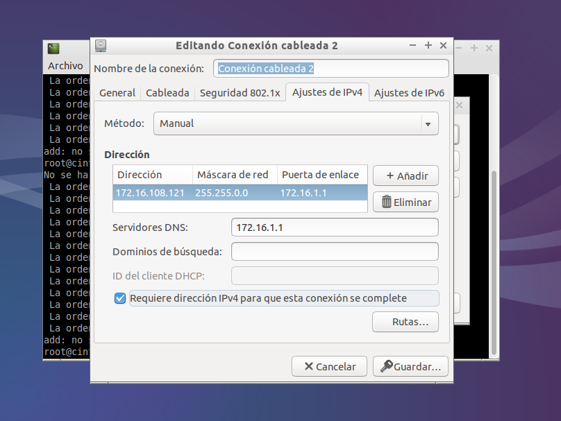
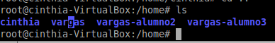
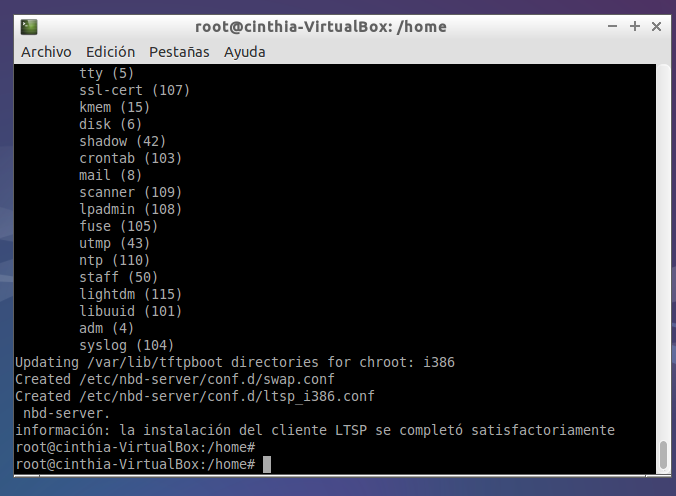
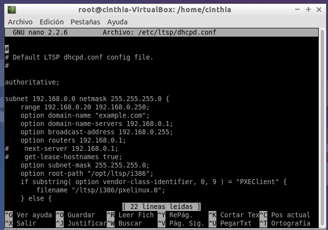
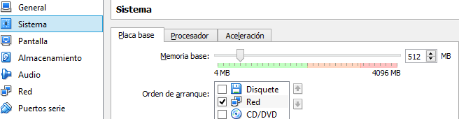
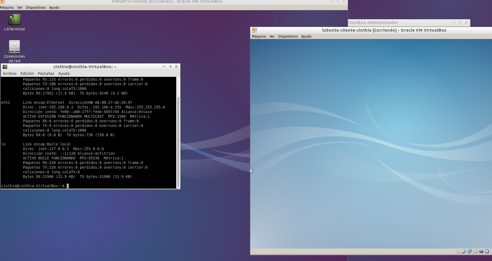

- Módulo: Sistemas Operativos
- Título del trabajo Clientes ligeros
- Componentes del grupo: Cinthia A. Vargas Jiménez
- Curso Académico: 2014/2015
- Fecha de entrega: 24 de Septiembre de 2014
- Primer paso :Necesitaremos un SO Lubuntu de 32 bits, estará a nivel de red en adaptador puente
- RED EXTERNA : Se modificará la IP estática con : 172.16.108.121

- Tercer paso : Creamos 3 usuarios locales :
- vargas
- vargas-alumno2
- vargas-alumno3

- Cuarto paso: Ejecutamos lo siguiente ; apt-get install ltsp-server-standalone
- Quinto paso : Instalamos el servidor SSh ; apt-get install openssh-server

- Sexto paso : Configuración dhcp (/etc/ltsp/dhcpd.conf)

- Primer paso : Creamos la MV cliente , no tendrá disco duro y unidad de DVD, con red en modo interno

- Segundo paso : Iniciamos el servidor y el cliente para verificar si funciona
